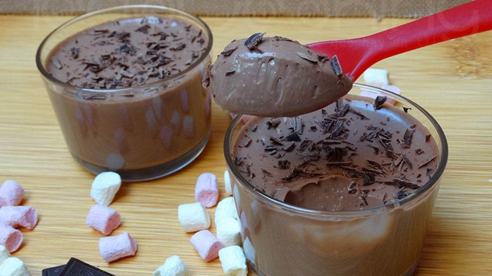

<template>
    <div class="page" data-name="postres">
        <!-- Top Navbar -->
        <div class="navbar navbar-large">
            <div class="navbar-bg"></div>
            <div class="navbar-inner sliding">
                <div class="title">Descubre</div>
                <div class="title-large">
                    <div class="title-large-text">Descubre</div>
                </div>
            </div>
        </div>
        <!-- Toolbar-->
        <div class="toolbar toolbar-bottom">
            <div class="toolbar-inner">
                <a href="/postres/" class="link"><i class="f7-icons color-black">rectangle_on_rectangle_angled</i></a>
                <a href="/" class="link"><i class="f7-icons color-black">house</i></a>
                <a href="/perfil/" class="link"><i class="f7-icons color-black">person</i></a>
            </div>
        </div>
        <!-- Scrollable page content-->
        <div class="list accordion-list">
            <ul>
                <li class="accordion-item">
                    <a href="" class="item-link item-content">
                        <div class="item-inner">
                           
                            <div class="item-title">Petit de chocolate</div>
                        </div>
                    </a>
                    <div class="accordion-item-content"><small style="opacity: 0.7">Dificultad: Fácil <br>Tiempo total: 15m <br>Elaboración: 15m <br>Reposo: 2h
                        </small>
                        <div class="card-content-padding">
                                   <h2>Ingredientes</h2>
                                   <h4>Para 3 unidades</h4>
                                   <ul>
                                       <li>100ml Nata Líquida</li>
                                       <li>50g Azúcar</li>
                                       <li>50g Chocolate negro</li>
                                       <li>100g Queso mascarpone a temperatura ambiente</li>
                                       <li>15g Cacao en polvo puro</li>
                                       <li>Ron</li>
                                   </ul>
                                   <h2>Cómo hacer Petit de chocolate</h2>
                                   <p>Calentamos el azúcar con la nata. Cuando hierva retiramos del fuego y agregamos el chocolate troceado. Dejamos templar mientras removemos para que no queden grumos. Añadimos el cacao en polvo tamizado y el ron (podemos elegir otro licor, al gusto). <br>
                                       Por último, echamos el queso mascarpone, removiendo hasta que no queden grumos. Vertemos con cuidado la crema en los vasitos de presentación y refrigeramos unas horas, hasta que los petit de chocolate cuajen.

                                   </p>
                               </div>
                    </div>
                </li>
                <li class="accordion-item">
                    <a href="" class="item-link item-content">
                        <div class="item-inner">
                            <div class="item-title">Item 2</div>
                        </div>
                    </a>
                    <div class="accordion-item-content">Item 2 content ...</div>
                </li>
            </ul>
        </div>
    </div>
</template>
